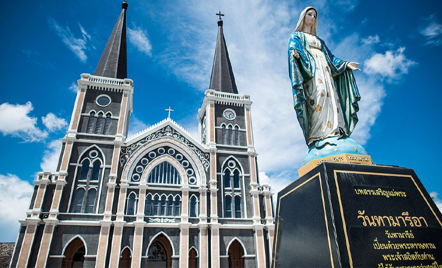
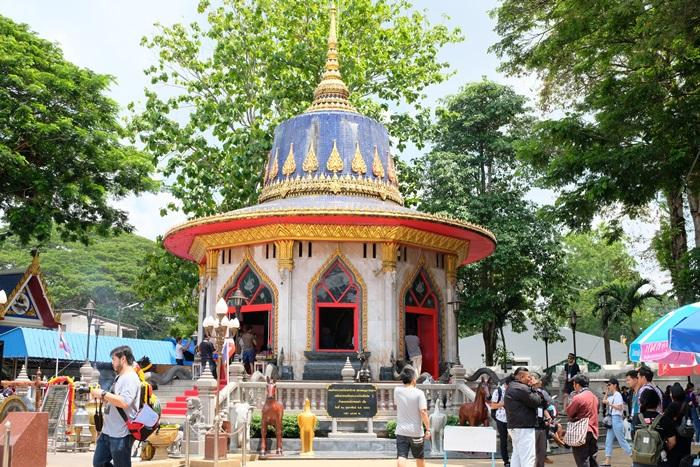

สถานที่ท่องเที่ยวแนะนำ

น้ำตกพลิ้ว
น้ำตกที่มีความสวยงามและเหมาะสำหรับการพักผ่อน ท่ามกลางธรรมชาติที่ชุ่มชื้นและปลาพลวงจำนวนมาก
น้ำตกพลิ้วเป็นสถานที่ท่องเที่ยวที่ขึ้นชื่อในจันทบุรี ซึ่งเป็นแหล่งท่องเที่ยวที่ได้รับความนิยมจากนักท่องเที่ยวทั้งในประเทศและต่างประเทศ ภายในอุทยานแห่งชาติน้ำตกพลิ้วแห่งนี้มีความสวยงามของธรรมชาติที่ร่มรื่น มีกิจกรรมต่างๆ ที่สามารถทำได้ เช่น การเดินป่าชมธรรมชาติ, การเล่นน้ำในลำธารที่ใสสะอาด และการชมปลาพลวงที่มีอยู่ในน้ำตกที่เป็นเอกลักษณ์ของที่นี่ นักท่องเที่ยวสามารถมาพักผ่อนหย่อนใจท่ามกลางบรรยากาศของธรรมชาติที่เย็นสบายและสงบเงียบ

โบสถ์คาทอลิกพระแม่ปฏิสนธินิรมล
โบสถ์คริสต์สไตล์โกธิคที่สวยงามและเก่าแก่ที่สุดในประเทศไทย โดดเด่นด้วยกระจกสีและสถาปัตยกรรมสุดอลังการ
โบสถ์คาทอลิกพระแม่ปฏิสนธินิรมล หรือที่รู้จักกันในชื่อ "โบสถ์แม่พระ" เป็นโบสถ์ที่มีสถาปัตยกรรมสุดอลังการในสไตล์โกธิค ซึ่งมีความเป็นเอกลักษณ์และแตกต่างจากโบสถ์ในภูมิภาคอื่นๆ โดยเฉพาะกระจกสีที่มีความสวยงามและสะท้อนแสงได้อย่างน่าทึ่ง โบสถ์แห่งนี้ยังเป็นศูนย์รวมจิตใจของชาวคาทอลิกในพื้นที่และมีประวัติศาสตร์ที่ยาวนาน ชาวจันทบุรีมักมาที่นี่เพื่อสักการะและขอพรจากพระแม่มารี

หาดเจ้าหลาว
หาดทรายขาวสะอาด บรรยากาศเงียบสงบ เหมาะสำหรับการเล่นน้ำและทำกิจกรรมทางทะเล
หาดเจ้าหลาวเป็นหนึ่งในชายหาดที่มีชื่อเสียงของจังหวัดจันทบุรี น้ำทะเลที่ใสมองเห็นได้ชัดเจน และหาดทรายที่ขาวสะอาด เป็นสถานที่ที่เหมาะกับการพักผ่อนหย่อนใจ ท่ามกลางบรรยากาศที่เงียบสงบ นอกจากนี้ยังมีบริการต่างๆ เช่น การดำน้ำตื้น ชมปะการัง หรือการล่องเรือชมธรรมชาติที่สวยงามบริเวณชายฝั่งของหาด การเยี่ยมชมที่หาดเจ้าหลาวยังเป็นโอกาสในการเพลิดเพลินกับกิจกรรมทางทะเลและการสัมผัสธรรมชาติอย่างใกล้ชิด

ชุมชนเก่าริมน้ำจันทบูร
ชุมชนเก่าแก่ที่เต็มไปด้วยบ้านเรือนโบราณ ร้านค้าของฝาก และอาหารพื้นเมืองรสเลิศ
ชุมชนเก่าริมน้ำจันทบูรเป็นแหล่งท่องเที่ยวที่มีความน่าสนใจสำหรับผู้ที่ชื่นชอบการเรียนรู้วัฒนธรรมท้องถิ่น บ้านเรือนที่สร้างด้วยไม้เก่าแก่ สถาปัตยกรรมแบบโบราณ และบรรยากาศของตลาดเก่าที่เรียงรายไปด้วยร้านค้าขายของพื้นเมือง เช่น เสื้อผ้าแฮนด์เมด ของฝากต่างๆ รวมถึงอาหารท้องถิ่นที่มีรสชาติอร่อย บริเวณนี้ยังมีวิวทิวทัศน์ของแม่น้ำจันทบูรที่สามารถนั่งพักผ่อนหรือเดินเล่นชมบรรยากาศได้ตลอดทั้งวัน

ศาลสมเด็จพระเจ้าตากสินมหาราช
สถานที่ศักดิ์สิทธิ์ที่ชาวจันทบุรีเคารพบูชา เพื่อรำลึกถึงพระมหากรุณาธิคุณของสมเด็จพระเจ้าตากสินมหาราช
ศาลสมเด็จพระเจ้าตากสินมหาราชเป็นสถานที่ที่สำคัญในการระลึกถึงพระมหากรุณาธิคุณของพระเจ้าตากสินมหาราช ผู้ทรงมีบทบาทสำคัญในการกอบกู้แผ่นดินไทยจากการถูกยึดครองและทรงก่อตั้งกรุงธนบุรีเป็นราชธานีในปี พ.ศ. 2310 ศาลแห่งนี้ตั้งอยู่ในบริเวณที่มีความสงบและเต็มไปด้วยประวัติศาสตร์ นักท่องเที่ยวและชาวจันทบุรีมักจะมาที่นี่เพื่อสักการะพระองค์และขอพรในด้านต่างๆ รวมถึงการเรียนรู้เกี่ยวกับประวัติศาสตร์ที่สำคัญของชาติไทย